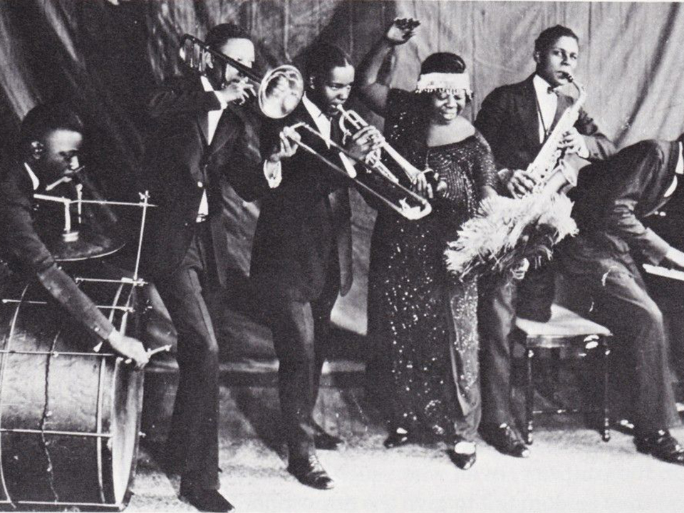

El Blues
Origenes
El blues ha evolucionado de una música vocal sin acompañamiento, interpretada por trabajadores negros pobres, a una gran variedad de subgéneros y estilos, con variedades regionales a lo largo de todo Estados Unidos y, posteriormente, de Europa y África Occidental. Las estructuras musicales y los estilos que están considerados hoy día como el blues, así como en la música country moderna, nacieron en las mismas regiones del sur de Estados Unidos durante el siglo XIX. Pueden encontrarse grabaciones de blues y de country que se remontan a los años veinte, periodo en el que la industria discográfica creó categorías de marketing denominadas «música racial» y «música hillbilly» para vender canciones a los negros y a los blancos, respectivamente. En aquel periodo, no existía una distinción musical clara entre los géneros blues y country, excepto por la raza del intérprete e incluso en determinadas ocasiones este detalle solía estar documentado incorrectamente por las compañías discográficas.22 Mientras que el blues emergía de la cultura afroamericana, algunos músicos de blues ya eran conocidos a nivel mundial. Algunos estudios sitúan el origen del espiritual negro en la exposición que tuvieron los esclavos al góspel, (originario de las Hébridas) de sus amos. El economista e historiador afroamericano Thomas Sowell indica que la población sureña, negra y ex-esclava se disgregó entre sus vecinos redneck escoceses/irlandeses. Sin embargo, los descubrimientos de Kubik y otros estudiosos muestran claramente la esencia africana de muchos aspectos vitales en la expresión del blues. Los motivos sociales y económicos del inicio del blues no se conocen en su totalidad.23 La primera aparición del blues no está bien definida y suele datarse entre 1870 y 1900, en un periodo que coincide con la emancipación de los esclavos y la transición de la esclavitud hacia la agricultura a pequeña escala en el sur de Estados Unidos. Paul Oliver cita un texto de Charlotte Forten, de 1862, en el que ya habla de blues como estado de ánimo y de cómo algunas work songs se cantaban de forma especial, para superar los blues.24 Algunos investigadores asocian el desarrollo del blues en los primeros años del siglo XX como un movimiento desde un grupo de interpretaciones hacia un género más individualizado, argumentando que el desarrollo del blues está asociado con la nueva condición de libertad de los esclavos. Según Lawrence Levine25 había una relación directa entre el énfasis ideológico nacional sobre el individuo, la popularidad de las enseñanzas de Booker T. Washington y el auge del blues». Levine indica que «psicológicamente, socialmente y económicamente, los negros fueron disgregados culturalmente de tal manera que hubiera sido imposible durante la esclavitud, y es sorprendentemente complicado que su música secular reflejara este hecho al igual que hizo su música religiosa».
